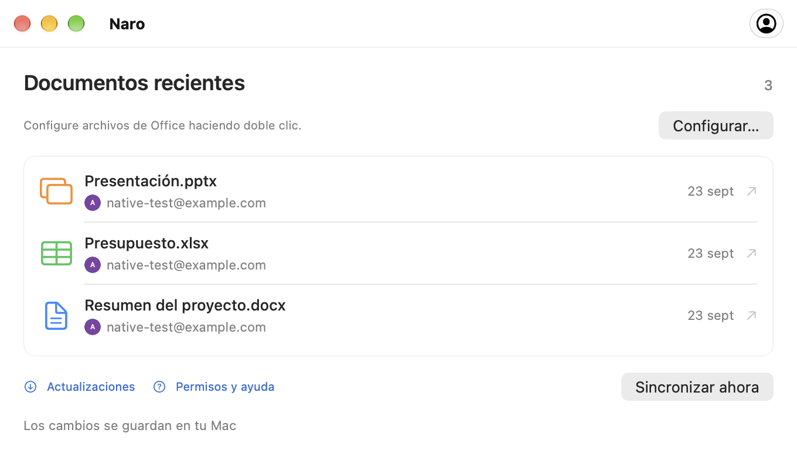

Conecta tu cuenta de Google.
Inicie sesión a través de su navegador, luego haga de Naro la aplicación predeterminada para sus archivos de Office en la configuración de su cuenta.
Archivos de Office, conectados en macOS
Naro es una aplicación de macOS que abre sus archivos de Word, Excel y PowerPoint en Google Docs, Sheets y Slides, luego sincroniza los cambios guardados con su Mac mientras la aplicación se está ejecutando y en línea.
Disponible para Apple Silicon · macOS 26 o posterior
Menos pasos. Más fluidez.
Tus archivos recientes. Tus cuentas de Google. Un lugar familiar para continuar donde lo dejaste.
Una mirada más cercana
Un comienzo familiar
Tu doble clic habitual, con los editores de Google al otro lado.
Inicie sesión a través de su navegador, luego haga de Naro la aplicación predeterminada para sus archivos de Office en la configuración de su cuenta.
Naro carga el archivo en tu Google Drive y abre el editor correspondiente. Con varias cuentas, elige primero un avatar.
Mientras Naro se ejecuta y está en línea, verifica los cambios guardados de Google y los escribe localmente, manteniendo una copia de seguridad.
Tres editores. Una aplicación.
Documentos, hojas de cálculo y presentaciones. Hasta 100 MB por archivo.

De un documento local a Google Docs.
DOC · DOCX
Abra sus hojas de cálculo en Google Sheets.
XLS · XLSX
Lleve sus presentaciones a Presentaciones de Google.
PPT · PPTXConecta la cuenta de Google que deseas utilizar para tus documentos. Naro usa tu nombre, correo electrónico y foto de perfil para mostrar cuentas conectadas y ayudarte a elegir la correcta. Naro nunca recibe tu contraseña de Google.
Cuando abres un archivo de Office local con Naro, carga ese archivo en tu Google Drive y abre el editor de Google en tu navegador. El acceso a Drive le permite a Naro recuperar los cambios guardados y sincronizarlos nuevamente con su Mac. El acceso está limitado a los archivos creados por Naro o compartidos explícitamente con él, no a todo su Drive.
Los documentos viajan directamente entre tu Mac y Google. Naro no tiene un servidor operado por un desarrollador que reciba sus documentos. Los tokens de inicio de sesión permanecen en el llavero de macOS.
Ayuda cuando la necesitas
Guías breves para tu primer archivo,
tu próxima cuenta y todo sincronizado.
Primeros pasos
Conecte Google, configure la apertura desde Finder y lleve su primer documento al navegador.
cuentas de Google
Agrega otra cuenta y elige dónde va cada documento con el selector de avatar compacto de Naro.
Guardado y sincronización
Comprenda el guardado local, las copias de seguridad y qué hacer cuando un archivo cambia en dos lugares.
Conviene saberlo
Sí. Descargue Naro desde las versiones de GitHub, o instalarlo con Homebrew:
brew install --cask plexideas/tap/naro. La descarga no tiene una firma de ID de desarrollador de Apple, por lo que es posible que macOS requiera que permita explícitamente el primer inicio.
La edición se realiza en Google Docs, Sheets o Slides en su navegador. Naro se encarga de abrir archivos desde Finder, elegir una cuenta y devolver los cambios guardados de Google a su Mac.
Naro se queda con ambas versiones y pregunta con cuál continuar. También realiza copias de seguridad locales antes de reemplazar un documento. Mantenga Naro en funcionamiento y conectado a Internet para su sincronización.
La compatibilidad depende de los editores de Office de Google. Es posible que no se conserven los formatos complejos, las macros y otras funciones avanzadas. Si Google actualiza un archivo DOC, XLS o PPT anterior, Naro guarda una copia en formato moderno junto con el original. La conversión de un archivo en un documento nativo de Google independiente no se realiza mediante el enlace del archivo original.
Naro es compatible con Apple Silicon Macs con macOS 26 o posterior. La aplicación puede consultar las versiones de GitHub para obtener actualizaciones. Tú eliges cuándo descargar, instalar y reiniciar desde la ventana de actualización.